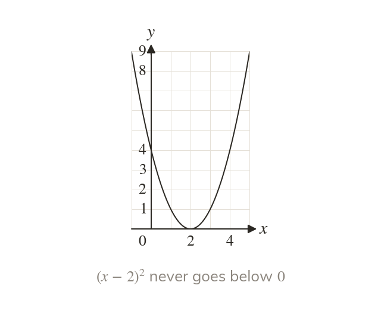
A square is at least zero
Any number squared is zero or positive. So for every
Some quadratics can never be zero or negative, whatever x is. Completing the square proves it for every x at once, and the same key points sketch any quadratic quickly.
Work down the page at your own pace. Write every answer in your book first, then click to check it.
Read each card, then follow the worked examples one step at a time.

Any number squared is zero or positive. So for every
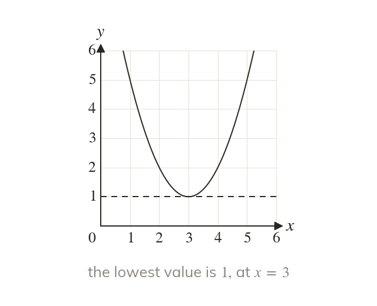
Adding makes at least
So the expression is always positive.
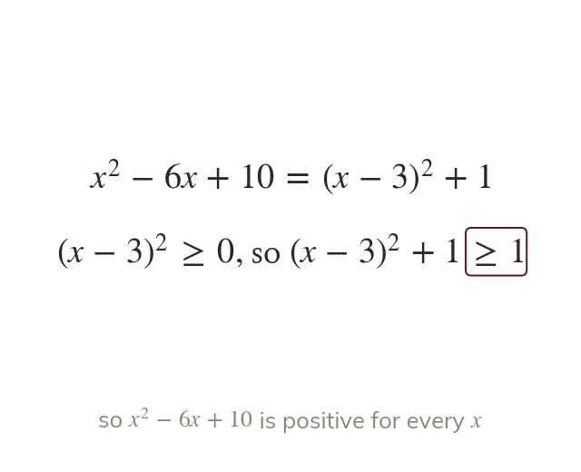
The proof says why the square cannot be negative. Then it states what has been proved.
Pick an answer. If it's wrong, the feedback tells you which mistake it was.
Read each card, then follow the worked examples one step at a time.
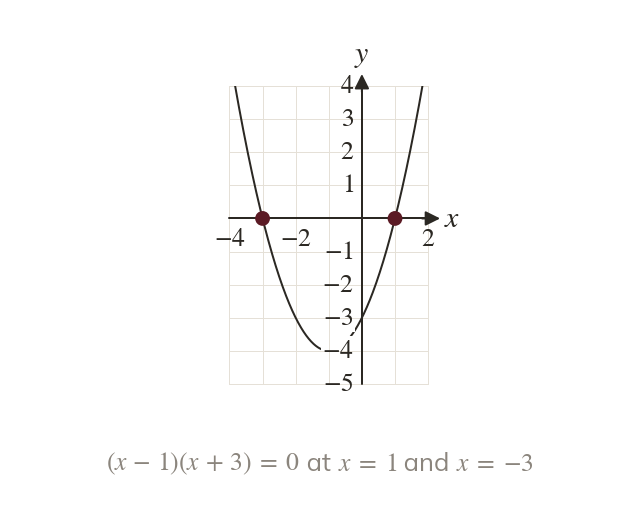
Each factor is zero at one critical value. So crosses at and
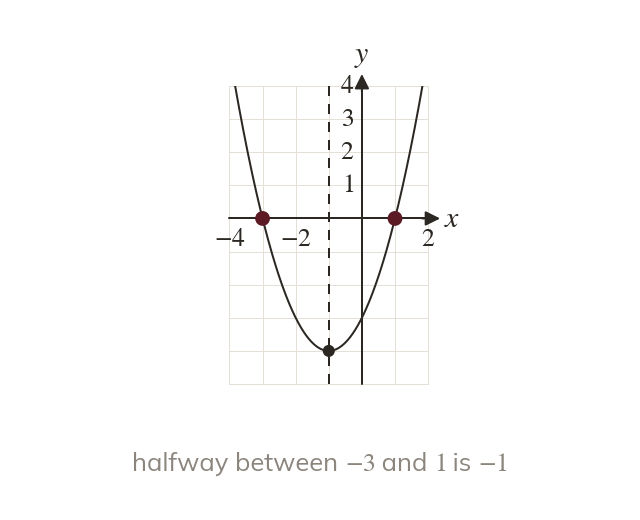
The line of symmetry is halfway between the roots. So the minimum is at where
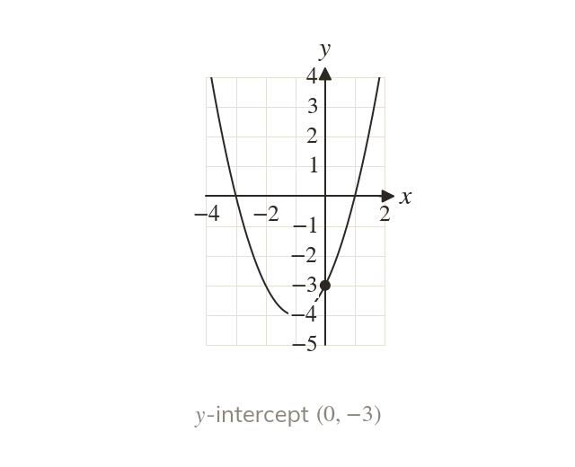
Here
A sketch labels these points and needs no exact scale.
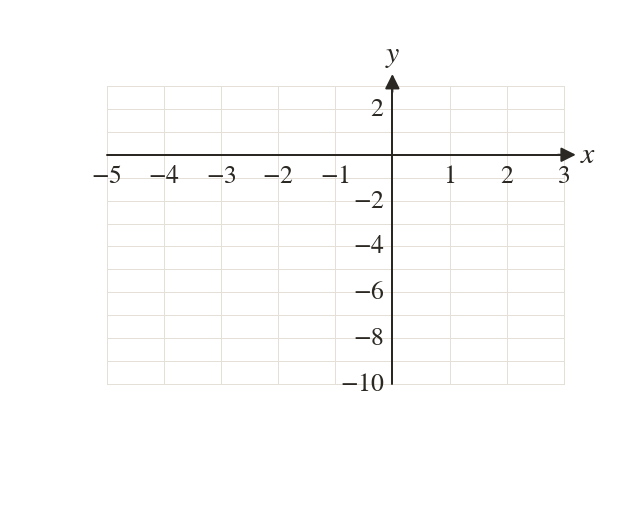
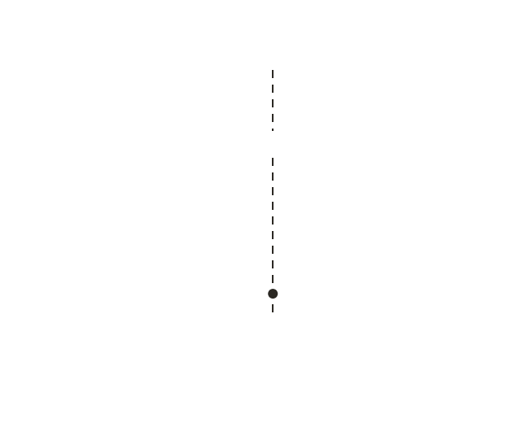
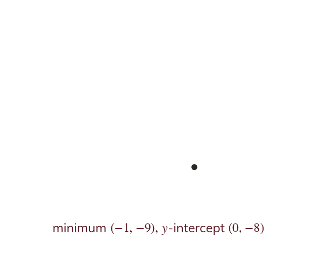
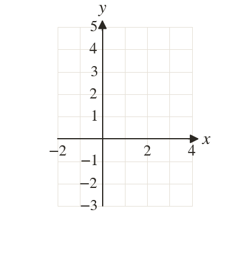
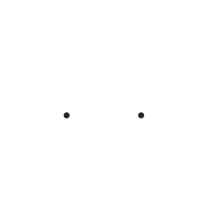
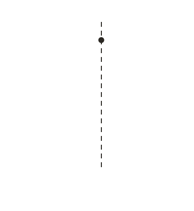
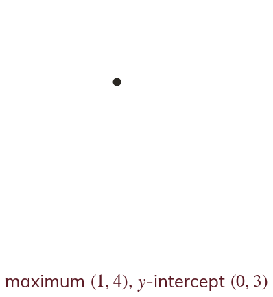
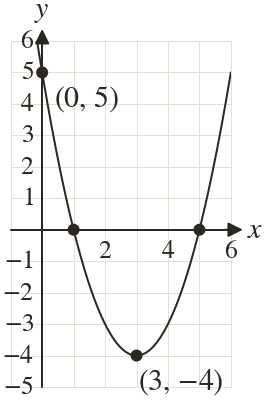
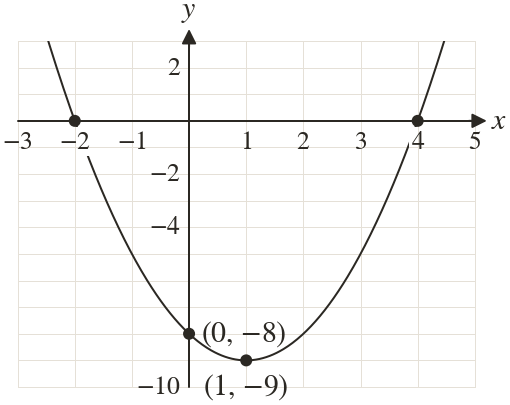
Pick an answer. If it's wrong, the feedback tells you which mistake it was.

Printable worksheet — the questions with room to work.
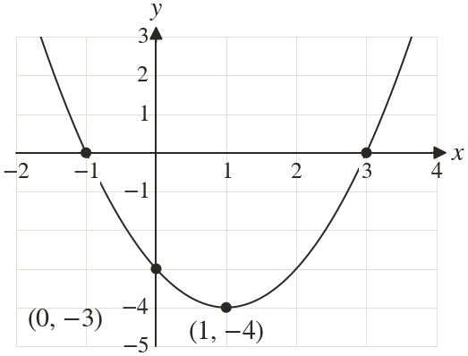
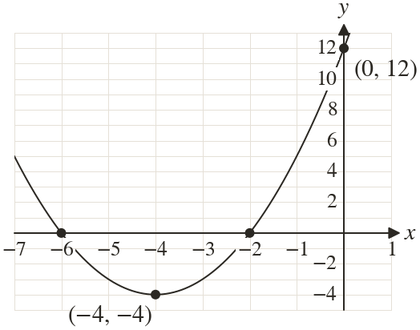
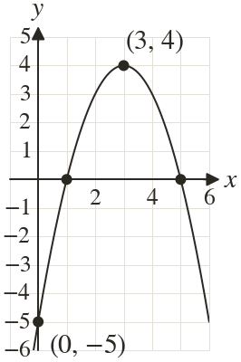
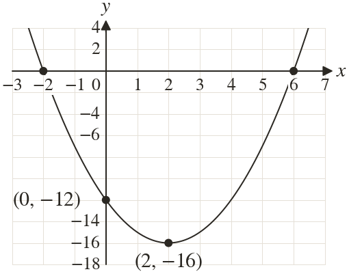
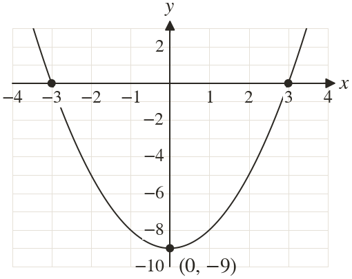
Finished? Next lesson: 10H.15.5 Quadratic Inequalities from a Sketch.
For each skill, tap the one that is true for you today. Your Revise pages start with anything you mark Not yet.
Your ratings are saved on this device only.
Log in, then search for a code to practise that skill.
Videos, worksheets and more on each part of this lesson.